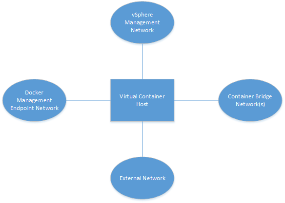
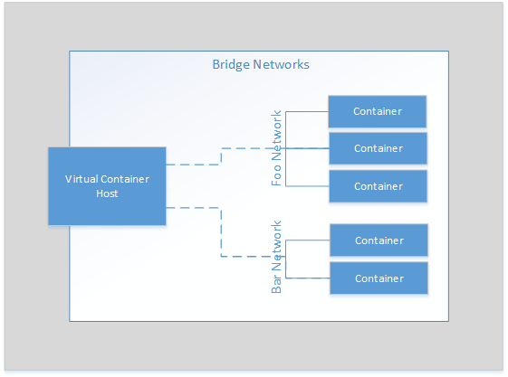
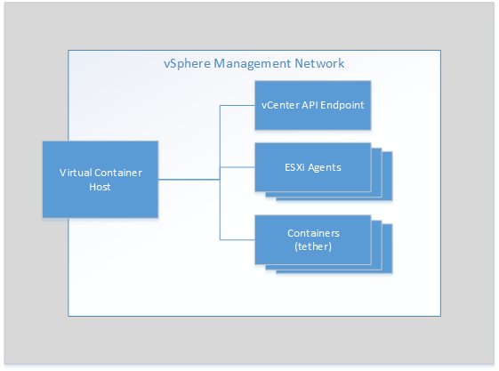
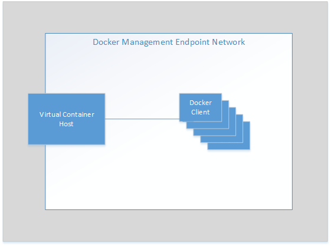

Networks Used by vSphere Integrated Containers Engine
You can configure networks that are tied into the vSphere infrastructure. Pre-configured networks available to a virtual container host are determined by the networks that you define when you configure the virtual container host.
Virtual container hosts connect to different types of network.

This topic provides an overview of the different network types.
IMPORTANT: A virtual container host supports a maximum of 3 distinct networks. Because the bridge and container networks require their own distributed port groups, at least two of the external, client, and management networks must share a network.
Container Bridge Networks
The network or networks that container VMs use to communicate with each other. Each virtual container host requires a unique bridge network.
You define the bridge networks by setting the bridge-network option when you run vic-machine create. For more detailed information about bridge networks, see the section on the bridge-network option in Virtual Container Host Deployment Options.
Container application developers can also use docker network create to create additional bridge networks. You can define a range of IP addresses that additional bridge networks can use by defining the bridge-network-range option when you run vic-machine create. For more detailed information about how to set bridge network ranges, see the section on the bridge-network-range option.

External Network
The network that container VMs use to connect to the internet. Containers can use this external network to publish network services. After defining the external network, you can deploy containers directly on the external interface.
You define the external network by setting the external-network option when you run vic-machine create. For more detailed information about management networks, see the section on the external-network option in Virtual Container Host Deployment Options.

vSphere Management Network
The network for communication between the virtual container host and vCenter Server and ESXi hosts. This network also serves as a tether within container VMs for communication with the virtual container host.
You define the management network by setting the management-network option when you run vic-machine create. For more detailed information about management networks, see the section on the management-network option in Virtual Container Host Deployment Options.

Docker Management Endpoint Network
Connects virtual container hosts to Docker clients and isolates the Docker endpoints from the more public external network.
You define the Docker management endpoint network by setting the client-network option when you run vic-machine create. For more detailed information about Docker management endpoint networks, see the section on the client-network option in Virtual Container Host Deployment Options.

Container Networks
Networks for container VMs to use for external communication when container developers run docker run or docker create with the --net option. For more detailed information about setting up container networks, see the sections on the container-network-xxx options in Virtual Container Host Deployment Options.